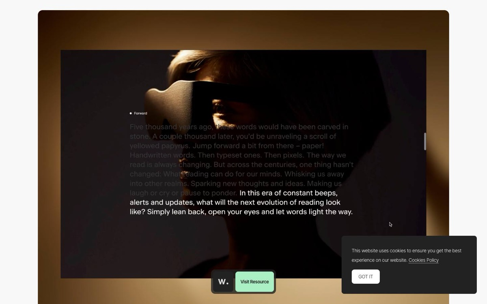
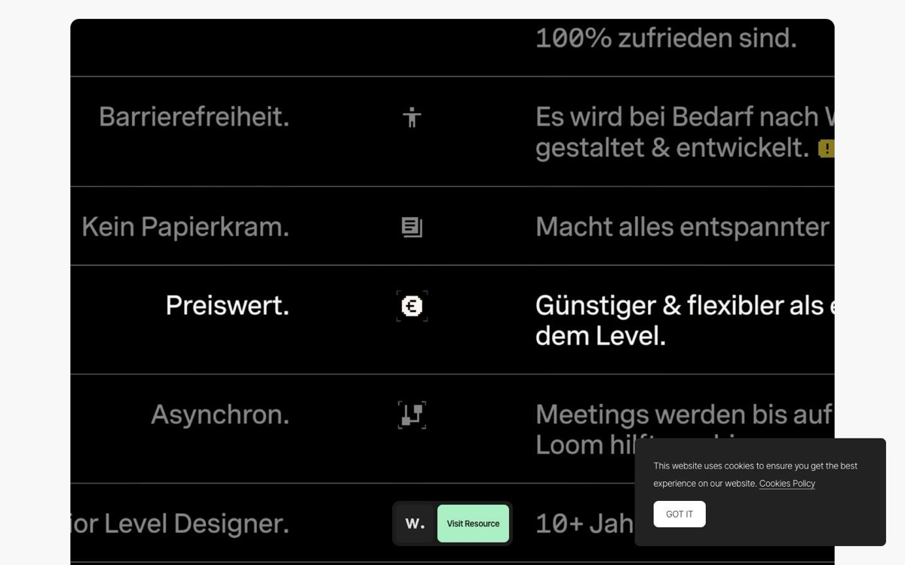
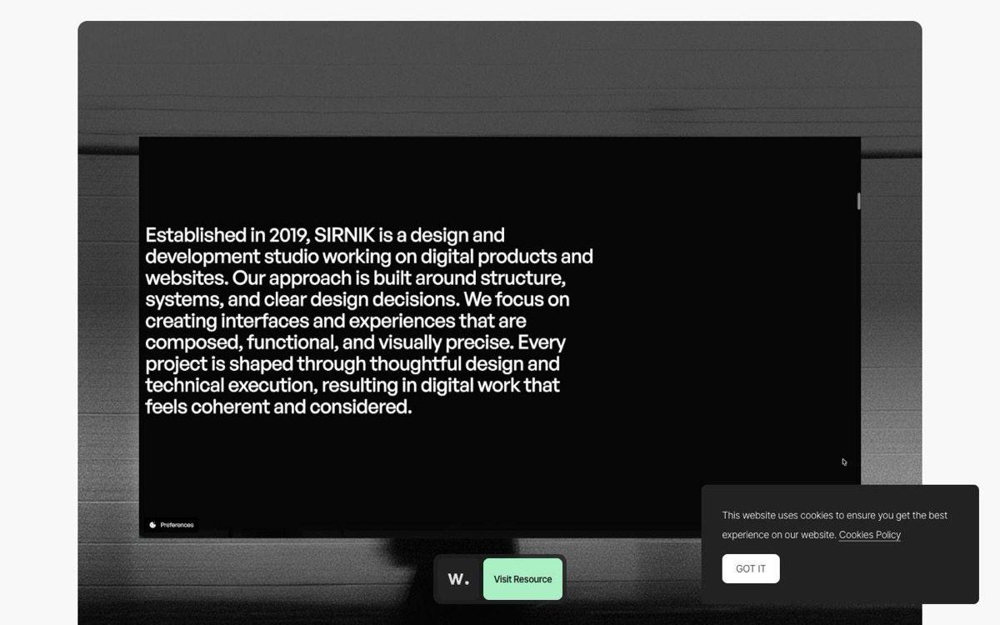
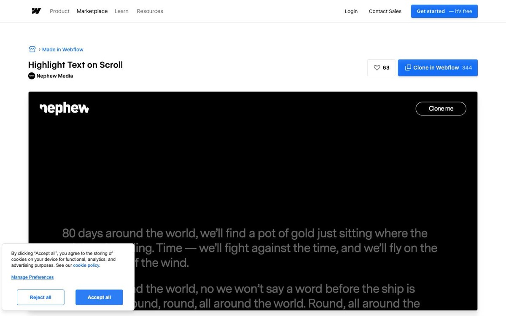
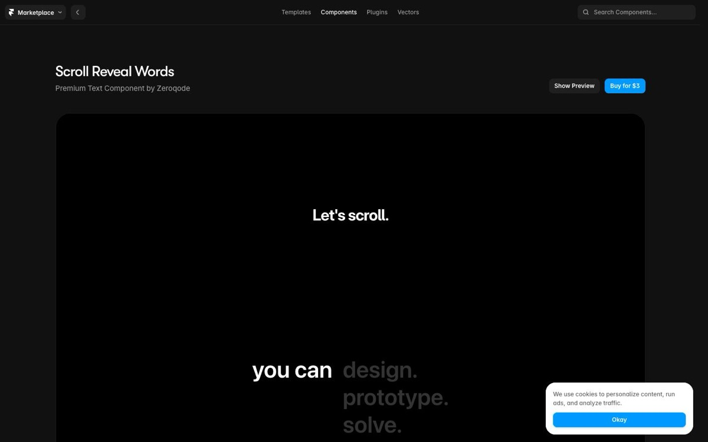
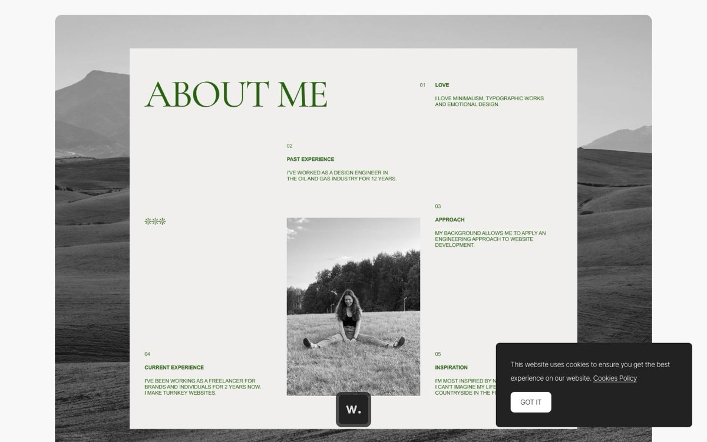
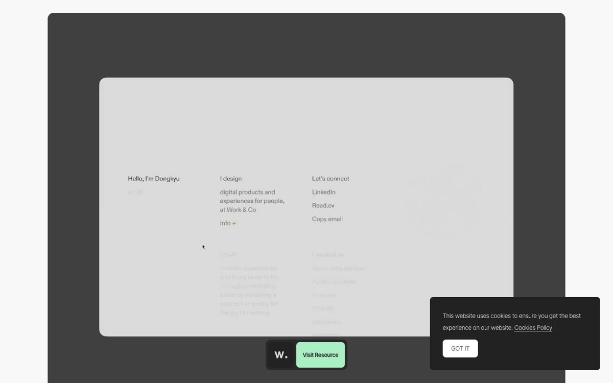
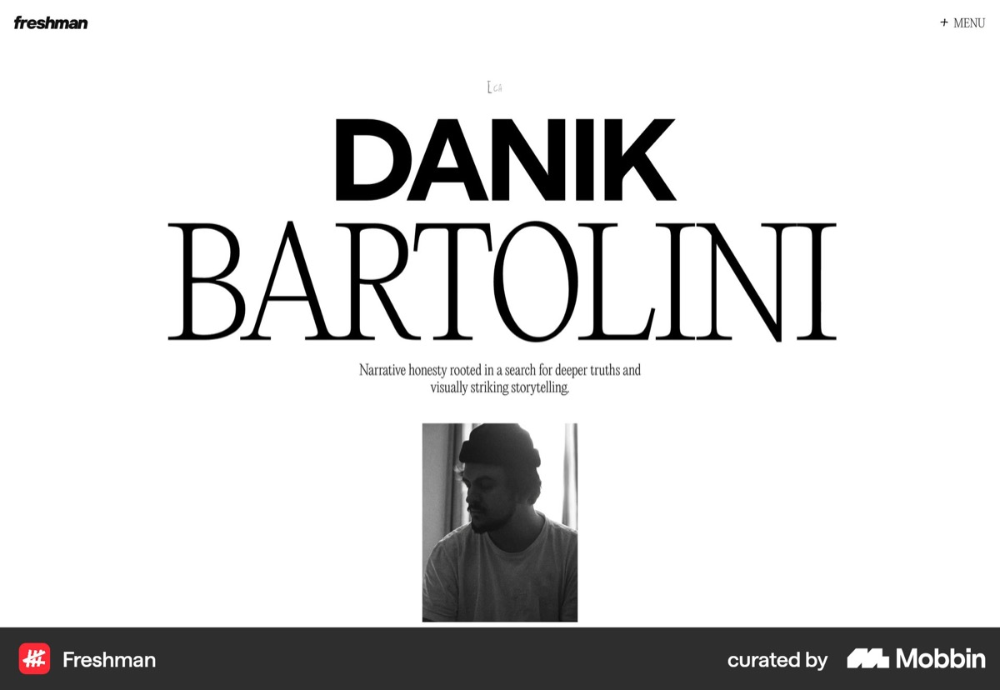
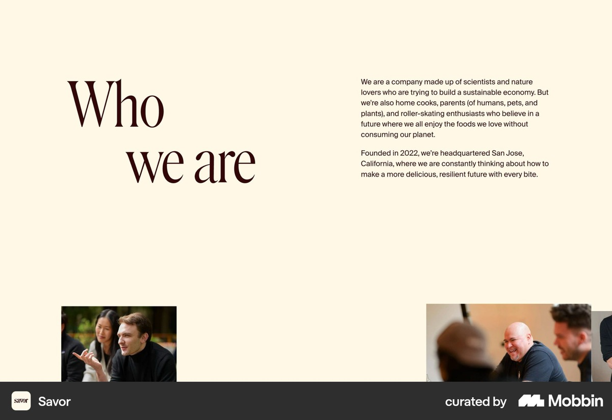

Owner request (2026-10-10): redesign the homepage About (קצת עליי) section, using the portrait from the בואו נדבר button and the supplied three-paragraph biography with its bold phrases kept; research inspiration for a creative About section, then build the strongest direction as a local trial. This adds a creative, interactive layer to the 20 classic About references captured earlier the same day.

Awwwards element
Scroll-based text highlight
A long paragraph sits over a dark atmospheric portrait; words already read stay dim while the current sentence turns fully white. Tagged GSAP, scroll, highlight.
Takeaway. Progressive emphasis turns reading into the interaction itself.
Fit. Primary mechanism reference. Moriz keeps every word readable and highlights only the owner’s bold phrases.

Awwwards element
Highlight benefit on scroll
A ruled list of benefits on black; the row at the reading line brightens while the others remain grey.
Takeaway. A single active item at the eye line is enough focus; the rest can stay quietly legible.
Fit. Reference for paragraph-level focus on desktop.

Awwwards element
About section with text reveal
A studio statement in large sans type on black, revealed line by line on scroll. Tagged scroll animation, text reveal, minimal.
Takeaway. A studio-voice paragraph can carry an About section on typography and motion alone.
Fit. Supports a large reading size; the reveal itself is not used, so text never waits to appear.

Made in Webflow
Highlight text on scroll (Webflow clone)
Large grey paragraphs on black; the line at the centre of the viewport lights up as it is reached.
Takeaway. Tie the effect to the viewport centre so it follows the visitor’s own pace.
Fit. Confirms the eye-line trigger used for the focus calculation.

Framer Marketplace
Sticky word highlight band
A sticky band where the current word lights up while the list scrolls past dimmed; includes a screen-reader fallback.
Takeaway. Keep the full text available to assistive technology regardless of the visual state.
Fit. Accessibility reference; the Moriz text is ordinary DOM text in every state.

Awwwards element
Editorial About me with numbered facts
A large serif ‘About me’ heading, three numbered short statements (love, past experience, approach) and a black-and-white photograph framed by landscape.
Takeaway. Short structured statements plus one honest photograph read as confident and personal.
Fit. Typographic confidence reference; Moriz keeps the owner’s continuous paragraphs.

Awwwards element
About as an interactive card
A calm card with columns (‘Hello, I’m Dongkyu’, ‘I design’, ‘Let’s connect’); secondary content fades in on interaction. Tagged interaction, transition, microinteraction.
Takeaway. Microinteractions can stay small and still feel crafted.
Fit. Restraint reference: one interaction, done carefully.

Mobbin section
Oversized name + small black-and-white portrait
A huge mixed sans/serif name, one short line of positioning, and a small monochrome portrait below.
Takeaway. A modest black-and-white portrait works when the typography carries the scale.
Fit. Supports keeping the 600px monochrome cutout at a moderate size.

Mobbin section
Large heading offset against a compact paragraph
A large serif ‘Who we are’ set against a narrow paragraph, with candid photographs below.
Takeaway. Asymmetry between heading, text and image gives a restrained section presence.
Fit. Composition reference for the two-column split.